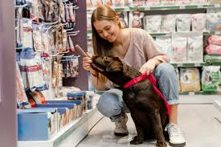
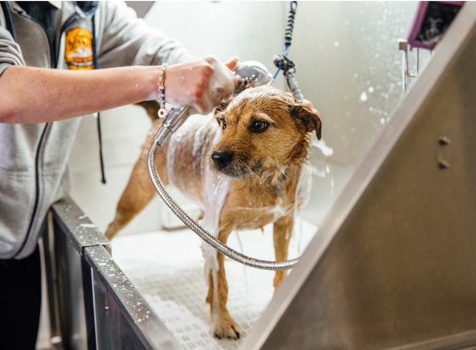
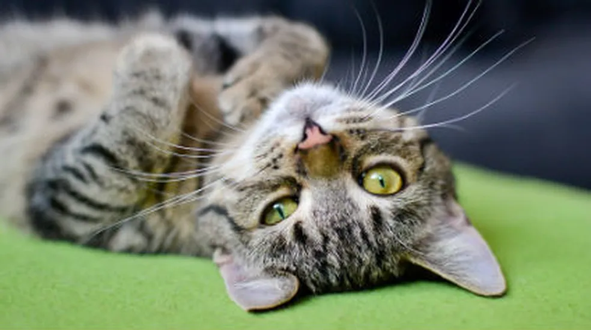

ClubPet
O ClubPet nasceu do amor verdadeiro pelos animais e da vontade de transformar a forma como os pets eram cuidados. Tudo começou quando os fundadores perceberam que muitos tutores enfrentavam dificuldades para encontrar um lugar que unisse atendimento profissional, carinho e atenção em um só espaço. Mais do que um simples petshop, surgiu o sonho de criar um ambiente acolhedor, onde cada animal fosse tratado como parte da família e recebesse os cuidados necessários para viver com saúde e felicidade.

Com dedicação e muito esforço, o ClubPet começou sua jornada oferecendo serviços voltados ao bem-estar animal, sempre priorizando a confiança entre tutores, pets e profissionais. A cada atendimento, crescia também a certeza de que cuidar de um pet vai muito além da estética ou da alimentação: envolve prevenção, acompanhamento veterinário, conforto e amor em cada detalhe. Esse propósito fez com que o ClubPet conquistasse espaço no coração de muitas famílias, tornando-se referência em cuidado e atenção personalizada.

Hoje, o ClubPet continua movido pela mesma paixão que deu início à sua história: garantir que cada pet tenha uma vida longa, saudável e cheia de momentos felizes ao lado de quem ama. Cada consulta, cada banho, cada orientação e cada gesto de carinho fazem parte de uma missão maior — oferecer qualidade de vida e fortalecer ainda mais a conexão entre os animais e suas famílias. Porque, no ClubPet, acreditamos que todo pet merece ser cuidado com amor, respeito e dedicação todos os dias.

EQUIPE